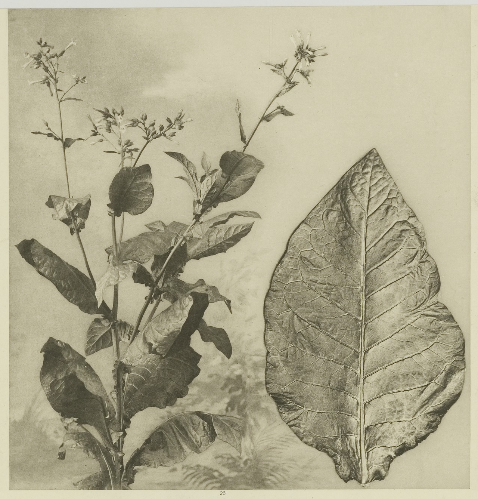

Tobacco was first discovered by the native people of Mesoamerica and South America and later introduced to Europe and the rest of the world. Tobacco has long been used in the Americas, with some cultivation sites in Mexico dating back to 1400–1000 BC. Many Native American tribes have traditionally grown and used tobacco. Eastern North American tribes historically carried tobacco in pouches as a readily accepted trade item, as well as smoking it, both socially and ceremonially, such as to seal a peace treaty or trade agreement. In some populations, tobacco is seen as a gift from the Creator, with the ceremonial tobacco smoke carrying one's thoughts and prayers to the Creator.
Following the arrival of the Europeans to the Americas, tobacco became increasingly popular as a trade item. Hernández de Boncalo, Spanish chronicler of the Indies, was the first European to bring tobacco seeds to the Old World in 1559 following orders of King Philip II of Spain. These seeds were planted in the outskirts of Toledo, more specifically in an area known as "Los Cigarrales" named after the continuous plagues of cicadas (cigarras in Spanish). Before the development of lighter Virginia and white burley strains of tobacco, the smoke was too harsh to be inhaled. Small quantities were smoked at a time, using a pipe like the midwakh or kiseru or smoking newly invented waterpipes such as the bong or the hookah (see thuốc lào for a modern continuance of this practice).
The alleged benefits of tobacco also account for its considerable success. The astronomer Thomas Harriot, who accompanied Sir Richard Grenville on his 1585 expedition to Roanoke Island, explains that the plant "openeth all the pores and passages of the body" so that the natives’ "bodies are notably preserved in health, and know not many grievous diseases, wherewithall we in England are often times afflicted." Tobacco smoking, chewing, and snuffing became a major industry in Europe and its colonies by 1700. Tobacco has been a major cash crop in Cuba and in other parts of the Caribbean since the 18th century. Cuban cigars are world-famous. In the late 19th century, cigarettes became popular. James Bonsack created a machine that automated cigarette production. This increase in production allowed tremendous growth in the tobacco industry until the health revelations of the late-20th century.